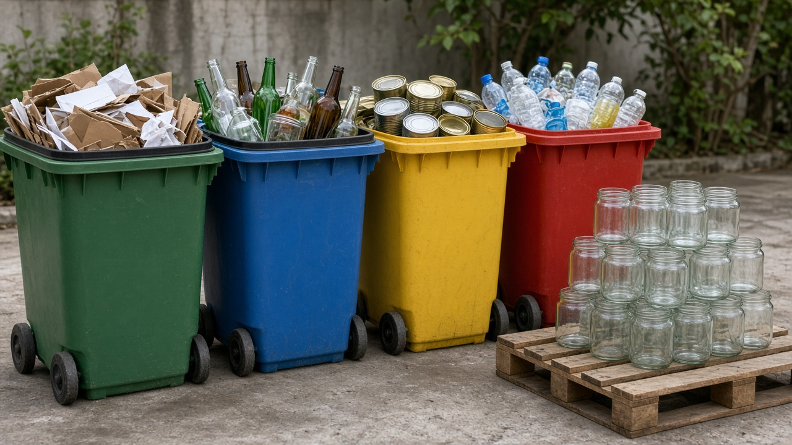
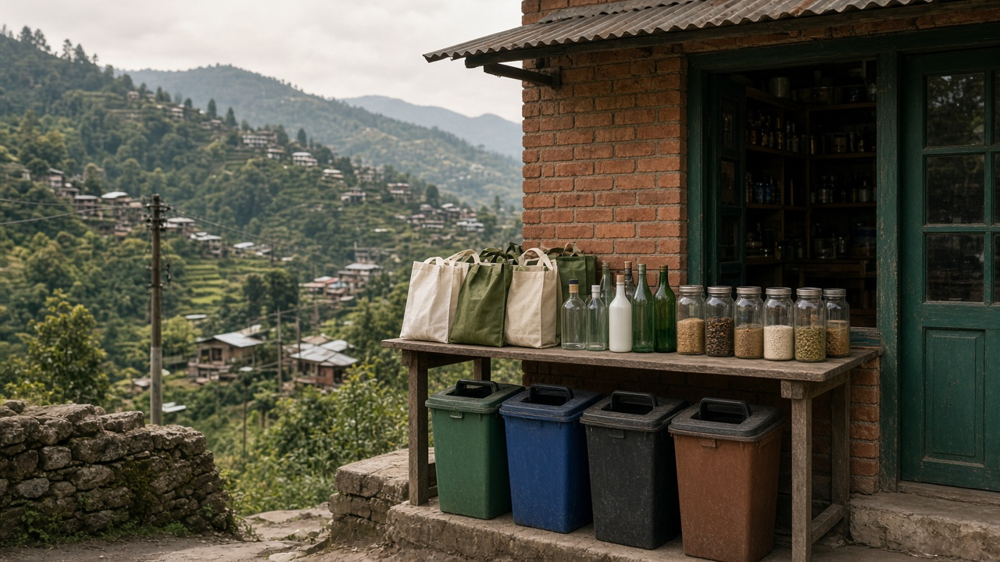

Reduce, Reuse, Recycle (3R Strategy)
Published on August 19, 2026
The 3R strategy—reduce, reuse, and recycle—forms the foundation of sustainable waste management worldwide. Reduction comes first because preventing waste at the source saves more resources than treating it later. Reusing items extends product life through repair, sharing, refilling, and second-hand use. Recycling recovers materials to make new goods, closing the loop when collection and processing systems work effectively. Together, the three Rs guide households, businesses, and governments toward lower environmental impact.
Applying the 3R hierarchy requires practical habits and supportive infrastructure. People can reduce waste by buying only what they need, choosing products with minimal packaging, and avoiding single-use items. Reuse grows through thrift stores, container deposit schemes, tool libraries, and creative upcycling. Recycling succeeds when materials are sorted correctly, contamination is minimized, and markets exist for recovered paper, metal, glass, and plastics. Schools and workplaces that adopt clear 3R policies often see quick improvements in waste diversion rates.
The 3R approach works best when paired with broader circular-economy policies and public education. Campaigns that explain why reduction ranks above recycling help shift attitudes from convenience to responsibility. Cities that combine 3R programs with composting, hazardous waste collection, and producer responsibility create comprehensive systems. By practicing reduce, reuse, and recycle daily, communities conserve energy, protect ecosystems, and move toward a cleaner, more sustainable future.

३आर रणनीति—घटाउने, पुन: प्रयोग र पुन: चक्रण—विश्वभर दिगो फोहोर व्यवस्थापनको आधार हो। घटाउने पहिलो आउँछ किनभने स्रोतमा फोहोर रोक्दा पछिको उपचारभन्दा बढी स्रोत बचत हुन्छ। पुन: प्रयोगले मर्मत, साझेदारी, पुन: भर्ने र पुरानो प्रयोगबाट उत्पादनको जीवन लम्ब्याउँछ। पुन: चक्रणले सामग्री पुन: प्राप्त गरी नयाँ सामान बनाउँछ, जब संकलन र प्रशोधन प्रणाली प्रभावकारी हुन्छ। तीन आर मिलेर घर, व्यवसाय र सरकारलाई कम वातावरणीय प्रभावतर्फ मार्गदर्शन गर्छ।
३आर पदानुक्रम लागू गर्न व्यवहारिक बानी र सहयोगी पूर्वाधार चाहिन्छ। मानिसले केवल आवश्यक कुरा किन्न, न्यूनतम प्याकेजिङ भएको उत्पादन छान्न र एक पटक प्रयोग वस्तु बच्न गर्दै फोहोर घटाउन सक्छन्। पुन: प्रयोग पुरानो सामान पसल, भाँडो जमानत, उपकरण पुस्तकालय र सर्जनात्मक अपसाइकलिङ बाट बढ्छ। पुन: चक्रण सफल हुन्छ जब सामग्री सही छुट्याइन्छ, प्रदूषण कम हुन्छ र कागज, धातु, सिसा र प्लास्टिकका बजार हुन्छन्। स्पष्ट ३आर नीति अपनाउने विद्यालय र कार्यालयले छिटो फोहोर तर्क दर सुधार देख्छन्।
३आर उपाय चक्रिय अर्थतन्त्र नीति र सार्वजनिक शिक्षासँग जोड्दा सबैभन्दा राम्रो काम गर्छ। किन घटाउने पुन: चक्रणभन्दा माथि छ भन्ने अभियानले सुविधाबाट जिम्मेवारीतर्फ दृष्टिकोण परिवर्तन गर्छ। ३आर कार्यक्रमलाई कम्पोस्टिङ, खतरनाक फोहोर संकलन र उत्पादक जिम्मेवारीसँग जोड्ने सहरले व्यापक प्रणाली बनाउँछन्। दैनिक घटाउने, पुन: प्रयोग र पुन: चक्रण अभ्यास गरेर समुदायले ऊर्जा बचत गर्छ, पारिस्थितिकी तन्त्र संरक्षण गर्छ र सफा, स्थायी भविष्यतर्फ अघि बढ्छ।

३आर रणनीति—कम करें, पुन: उपयोग और पुन: चक्रण—विश्व भर स्थायी अपशिष्ट प्रबंधन की नींव है। कमी सबसे पहले आती है क्योंकि स्रोत पर अपशिष्ट रोकने से बाद में उपचार से अधिक संसाधन बचते हैं। पुन: उपयोग मरम्मत, साझेदारी, रीफिल और पुरानो उपयोग से उत्पाद का जीवन बढ़ाता है। पुन: चक्रण सामग्री पुनर्प्राप्त कर नई वस्तुएँ बनाता है, जब संग्रह और प्रसंस्करण प्रणालियाँ प्रभावी हों। तीन आर मिलकर घर, व्यवसाय और सरकार को कम पर्यावरणीय प्रभाव की ओर मार्गदर्शन करते हैं।
३आर पदानुक्रम लागू करने के लिए व्यावहारिक आदतें और सहायक अवसंरचना चाहिए। लोग केवल आवश्यक चीज़ें खरीदकर, न्यूनतम पैकेजिंग वाले उत्पाद चुनकर और एक बार उपयोग वाली वस्तुओं से बचकर अपशिष्ट कम कर सकते हैं। पुन: उपयोग पुरानो सामान पसल, भाँडो जमानत, उपकरण पुस्तकालय और सर्जनात्मक अपसाइकलिङ से बढ़ता है। पुन: चक्रण सफल होता है जब सामग्री सही छाँटी जाए, प्रदूषण कम हो और कागज, धातु, काँच और प्लास्टिक के बाज़ार हों। स्पष्ट ३आर नीति अपनाने वाले स्कूल और कार्यस्थल तेज़ी से अपशिष्ट तर्क दर में सुधार देखते हैं।
३आर दृष्टिकोण व्यापक चक्रिय अर्थतन्त्र नीतियों और सार्वजनिक शिक्षा के साथ जुड़ने पर सबसे अच्छा काम करता है। कमी पुन: चक्रण से ऊपर क्यों है, यह बताने वाले अभियान सुविधा से जिम्मेदारी की ओर दृष्टिकोण बदलते हैं। ३आर कार्यक्रमों को कम्पोस्टिङ, खतरनाक अपशिष्ट संग्रह और उत्पादक जिम्मेदारी के साथ जोड़ने वाले शहर व्यापक प्रणालियाँ बनाते हैं। रोज़ कम करने, पुन: उपयोग और पुन: चक्रण का अभ्यास करके समुदाय ऊर्जा बचाते हैं, पारिस्थितिकी तंत्रों की रक्षा करते हैं और स्वच्छ, स्थायी भविष्य की ओर बढ़ते हैं।